Ports EP 1
ไม่ได้เขียนบทความมานาน วันนี้ขอเรื่องหนัก ๆ ซักเรื่องดีกว่า
วันนี้ว่าจะมาคุยในเรื่อง “พอร์ต” ซึ่งก็จะเกี่ยวโยงถึงลำโพงตู้เปิดหรือเบสรีเฟล็กซ์ และตู้แบนพาสด้วย
- พอร์ต คืออะไร มาเริ่มด้วยพื้นฐานกันก่อน การทำงานของพอร์ตจริง ๆ แล้วก็เหมือนกับ การทดลองวิทยาศาสตร์ที่เราเอาลมไปเป่าที่ปากขวดน้ำ แล้วขวดน้ำก็ส่งเสียงความถี่หนึ่งออกมา
ในรูปที่ผมนำมาโชว์ เรียกว่า Helmholtz Resonator เป็นลูกโลหะด้านในเป็นโพลง และมีคอเล็ก ๆ ยื้นออกมา เขาเล่าว่าถ้าเอาส่วนของปลายคอนี้มาไว้ใกล้ ๆ หู จะทำให้ได้ยินเสียงความถี่หนึ่ง ๆ ตามที่เจ้าลูกนี้จูนไว้
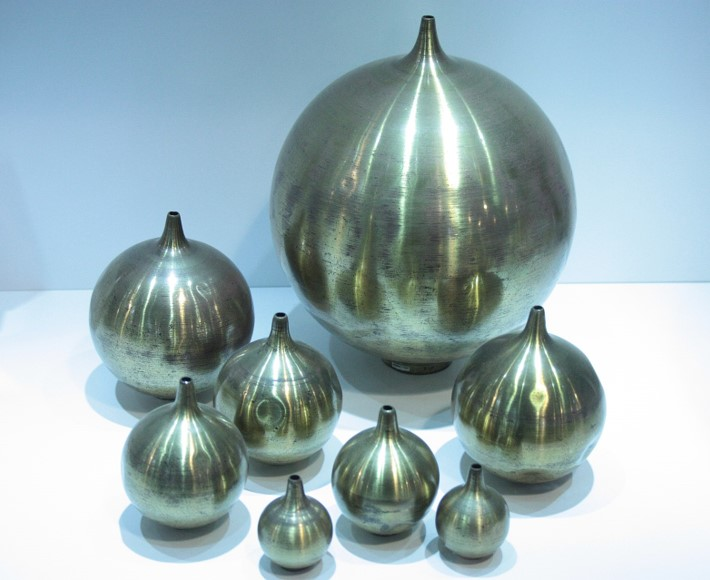
- พอร์ต ทำงานอย่างไร
ส่วนประกอบสำคัญของ Helmholtz Resonator มีส่วนสำคัญอยู่สองอย่าง คือ 1 โพลงภายใน 2 คอขวด ซึ่งถ้าเทียบกับลำโพง โพลงก็เหมือกับตู้ลำโพง และคอขวดคือพอร์ตนั่นเอง
วิธีการทำงาน อากาศภายในคอขวดจะมีความถี่สั่นพ้องอยู่ค่าหนึ่ง เมื่อมีแรงภายนอกเรามาในระบบ ไม่ว่าจะเข้าไปทางปากขวด หรือเข้าไปตรง ๆ ที่โพรง ถ้าความถี่ของแรงนั้นมีความถี่เท่ากับความถี่สั่นพ้อง อากาศภายในคอขวดก็จะสั่นตามความถี่นั้นและเกิดการขยายคลื่นเสียงนั้นออกมา
ความถี่สั่นพ้องนี้จะสำพันธ์กับมวลอากาศภายในคอ พื้นที่หน้าตัดของคอ และประมาตรอากาศในโพรง สมการเต็ม ๆ สามารถอ่านได้จาก
https://en.wikipedia.org/wiki/Helmholtz_resonance
ซึ่งสุดท้ายแล้วเมื่อนำสมการมาแทนค่าคงที่ของอากาศเช่นความดัน ความหนาแน่นลงไป ก็จะได้สามารถสุดท้ายตามในภาพ
c คือความเร็วเสียง A คือพื้นที่หน้าตัดของคอขวด V ปริมาตรอากาศภายในโพรง LTot ความยาวของคอขวด + “End Correction” หรือค่าปรับความยาว
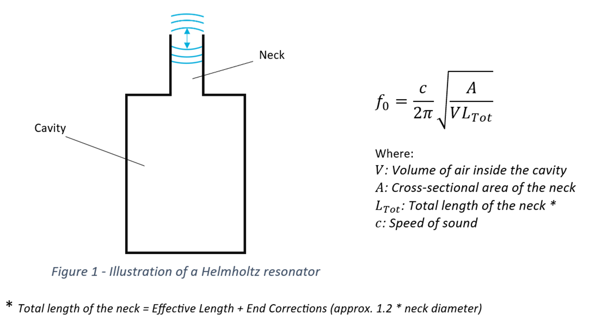
- เมื่อนำสมการ Helmholtz มาจัดรูปใหม่ และแปลงหน่วยจาก เมตร ให้กลายเป็น ซม. และลิตร และใช้ End correction เป็นอัตราส่วนกับเส้นผ่านศูนย์กลางของพอร์ต ก็จะได้สมการณ์ตามในภาพ ซึ่งหลาย ๆ ท่านก็อาจจะเคยเห็นกัน ในหนังสือออกแบบลำโพงต่าง ๆ
Dv คือ เส้นผ่านศูนย์กลางของพอร์ต หรือเส้นผ่านศูนย์กลางของพื้นที่วงกลมที่เทียบเท่าพื้นที่หน้าตัดของพอร์ต ในกรณีที่พอร์ตกลม หน่วยเป็น ซม. Vb คือ ปริมาตรของตู้ ไม่รวมปริมาตรพอร์ต หน่วยเป็น ลิตร Lv คือ ความยาวพอร์ต หน่วยเป็น ซม. k คือ ค่าสัมประสิทธิ์สำหรับปรับความยาวพอร์ต end correction coefficient
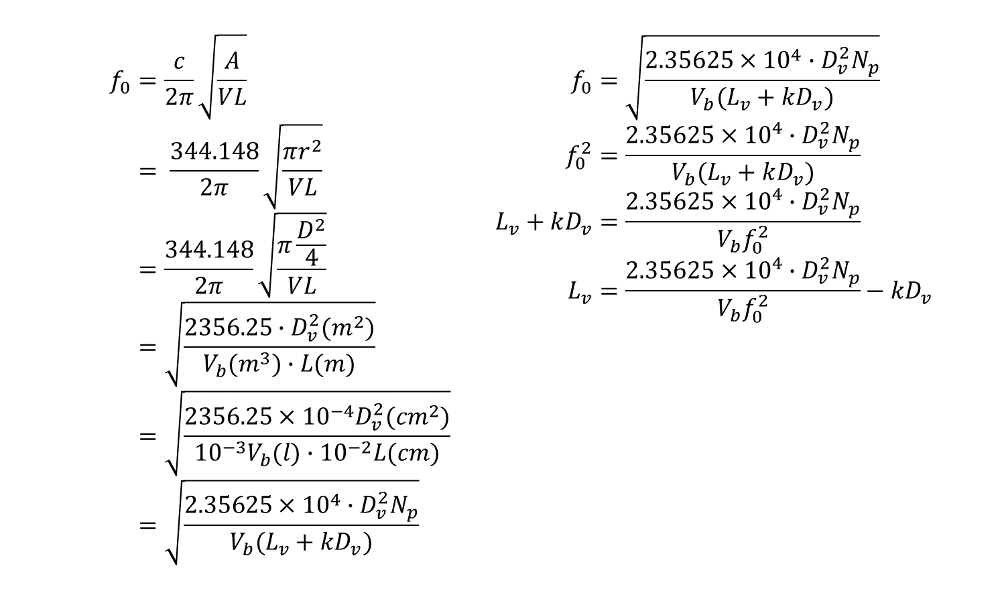
- ค่า k
การสมการจะเห็นว่าตัวแปรส่วนใหญ่จะตรงไปตรงมา ยกเว้นอยู่ตัวนึง คือ “k”
ค่า k จะเปลี่ยนไปตามลักษณะปากพอร์ต ซึ่งค่าที่เป็นที่รู้ค่ากันแน่นอนจะมีอยู่สองแบบ คือปากพอร์ตแบบ free air และ ปากพอร์ตที่ติดผนังหรือ flanged
โดบปากพอร์ตแบบ free จะใช้ค่า k = 0.307 ส่วนปากพอร์ตแบบ flanged ใช้ค่า k = 0.425
ถ้าข้างหนึ่งเป็น flanged ข้างหนึ่งเป็น free ใช้ k = 0.425 + 0.307 = 0.732 หรือถ้าเป็น flanged ทั้งสองข้างจะได้ค่า k = 0.425 + 0.425 = 0.850
แต่ค่า k นี้จะใช้ได้เฉพาะ พอร์ตที่เป็นท่อตรง ๆ เท่านั้น ถ้าเป็นพอร์ตที่มีส่วนเว้า/โค้งหรือ flare จะใช้ไม่ได้
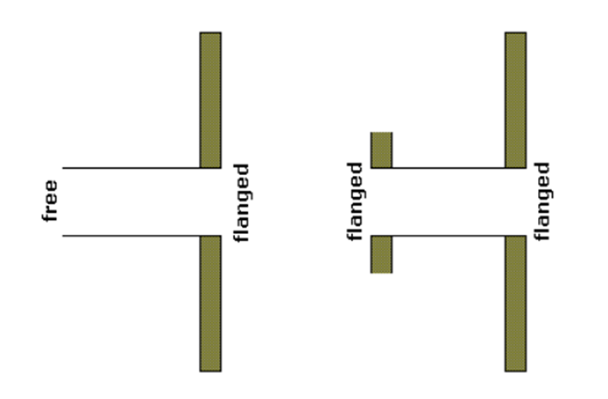
- ค่า k อื่น ๆ นอกจากนี้ค่า k ยังเปลี่ยนไปตามต่ำแหน่งของพอร์ตอีก ในรูปผมเอามาจากเว็ปบอร์ดที่หนึ่ง ซึ่งก็ยังไม่แน่ใจในความถูกต้องซักเท่าไหร่
ในตอนต่อไปผมจะมาเล่าให้ฟังเรื่องขนาดของพอร์ตและวิธีการออกแบบ Flare พอร์ต
- รู้หรือไม่ว่าเสียงจากพอร์ตไม่ได้ดังขึ้นตามที่เราเพิ่มความดังของลำโพงเสมอไป!
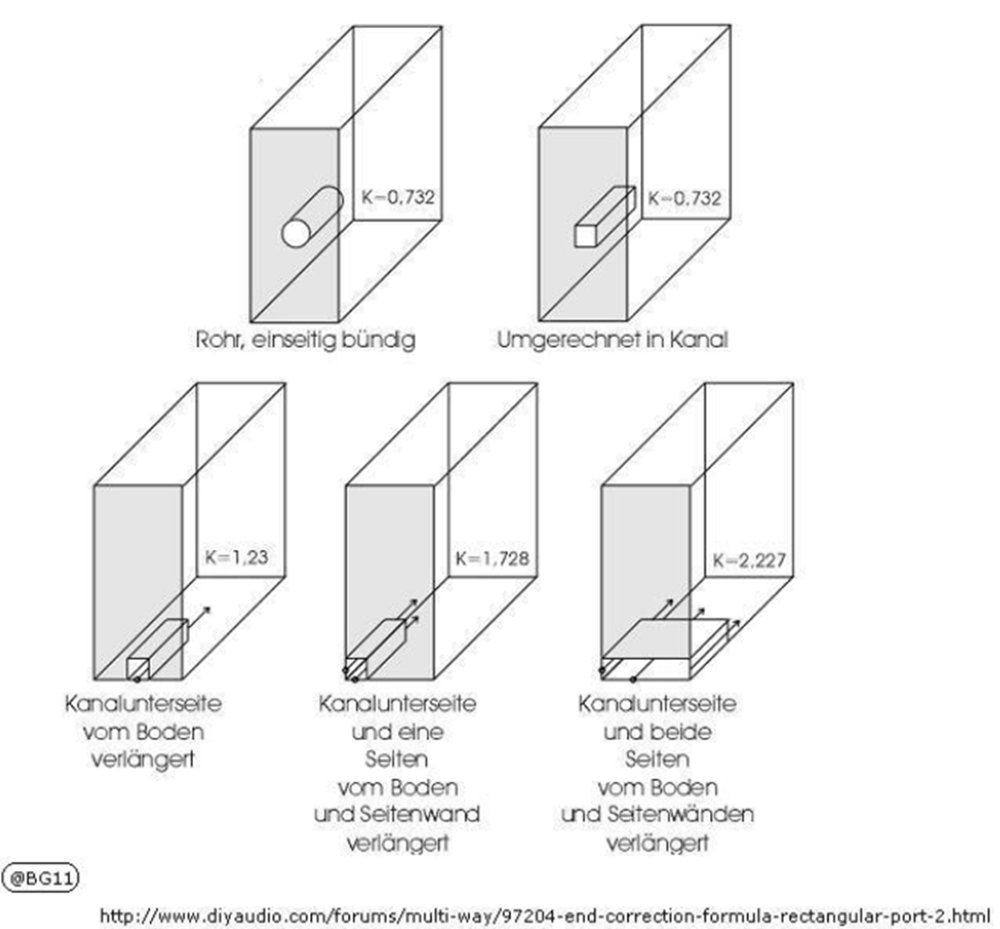
Port EP 2
ต่อจากที่โปรยไว้ในตอนที่แล้ว
”เสียงจากพอร์ตไม่ได้ดังขึ้น ตามความดังของลำโพงเสมอไป” หรือ พูดให้ยากและไม่รู้เรื่องขึ้นหน่อยว่า พอร์ตไม่ได้ดังขึ้นเป็นสมการเชิงเส้น : D
แต่ประโยคนี้มีความหมายว่าอย่างไร?
ความหมายของประโยคนี้คือ
เมื่อเปิดเสียงเบา ๆ เสียงจากลำโพงและพอร์ต จะดังในระดับหนึ่ง จากนั้นเพิ่มเสียงขึ้นอีกเล็กน้อย ลำโพงและพอร์ตจะดังขึ้นในระดับพอ ๆ กัน
แต่พอเพิ่มเสียงขึ้นเรื่อย ๆ เสียงลำโพงก็ยังคงดังเพิ่มขึ้น แต่เสียงพอร์ตเริ่มดังตามไม่ทัน และเมื่อเปิดถึงความดังระดับหนึ่ง ขณะที่เสียงลำโพงยังดังขึ้น แต่เสียงจากพอร์ตจะไม่ดังขึ้นอีก
ปรากฎการณ์นี้ เรียกอย่างเป็นทางการว่า “port compression” หรือ “การบีบอัดในพอร์ต”
บทความนี้จะอ้างอิงมาจาก Maximizing Performance from Loudspeaker Ports ของ Alex Salvatti, Doug Button และ Allan Devantier และงานวิจัยอื่น ๆ ที่เกี่ยวข้องซึ่งดูจาก reference ในงานเล่มนี้ได้เลย
อ่านบทความอื่น ๆ ของผม https://docs.google.com/spreadsheets/d/1rxUrbgZ-fHgAC0ry7jyNlXNsLzxi6G1SH0ofxL6onEk
- Compression
ก่อนเข้าเรื่อง ทำความเข้าใจคำว่า compression ก่อน
พอแปรคำว่า compression โดยปกติแล้วก็คือ การบีบอัด ซึ่งเมื่อบีบอัดแล้วมันจะต้องหนาแน่นขึ้น แข็งขึ้น ความดันมากขึ้น
แต่พูดถึงความดังของเสียงแล้ว ความดัง คือ ความดัน อย่างคำว่า ระดับความดันเสียง หรือ Sound Pressure Level (SPL) ก็จะเห็นว่ามันคือความดัน
เมื่อใช้กับ “port compression” แล้วมันคือการลดลงของความดันในพอร์ต ไม่ใช้บีบอัดแล้วความดันหรือความดังจะเพิ่มขึ้นแต่อย่างใด
- ประวัติความเป็นมา ในปี 1968 Ingard และ Ising ได้ทำการวิจัยศึกษาธรรมชาติของการบีบอัดของอากาศและค่าความเพี้ยนที่เกิดขึ้นในท่ออากาศ พวกเขาพบว่า (Fig.2) อัตราการเพิ่มของแรงดันในท่อ p2 ลดลงเมื่อ ความดันอากาศจากหลังลำโพง p1 เพิ่มขึ้น และเมื่อวัด distortion พวดเขาพบ harmonic distortion ลำดับคี่ เพิ่มขึ้นอย่างเห็นได้ชัด (ใครเคยเล่น FFT คงจะคุ้น ๆ ว่าเหมือนกับติด soft clip ของสัญญาณ)
เมื่อเอาความดันและความเร็วมาพล็อต ก็จะพบว่าเฟสของ ความเร็วลม u และความดัน p2 เปลี่ยนไปด้วย ถ้าดูดี ๆ ที่ p1 = 120dB เฟส p2 จะตามหลัง p1 อยู่ 90º ซึ่ง p1 นั้นเป็นความดันด้านหลังลำโพง ทำหรือบอกไว้ว่าเฟสของ p2 นำเฟสของดอกลำโพงอยู่ 90º
แต่เมื่อดูที่ p1 = 160dB จะเห็นว่า p1 และ p2 นั้น in phase กัน ซึ่งก็คือ p2 กลับเฟสกลับหน้าลำโพงพอดี! ทำให้ความดังของพอร์ตนั้นลดลงไปอีก
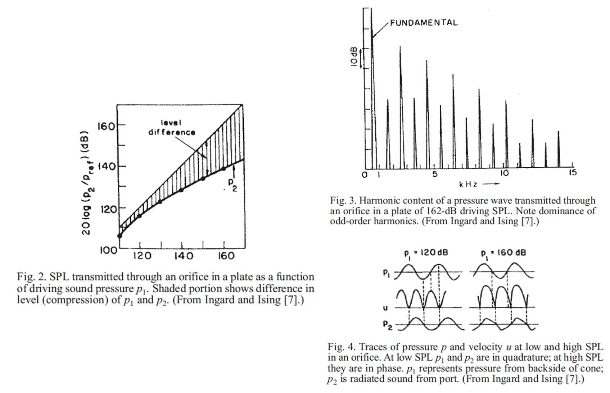
- เกิดจากอะไร? ทำไมถึงเป็นอย่างนั้น
ผมขอเริ่มจากการแนะนำอัตราส่วน Reynolds Number ให้รู้จักกันก่อน
Reynolds Number คืออัตราส่วน ของความเฉื่อยต่อความหนื่ด ในของไหล หรือ Newtonian fluid อย่างเช่นอากาศ
สมการ Reynolds Number (Re) ในท่อ สามารถคำนวนได้จากสมการ
d คือ เส้นผ่านศูนย์กลาง ไฮดรอลิก ของท่อ (m) ρ คือ ความหนาแน่นอากาศ (~1.184 kg/m3 ที่ 25ºC) V คือ ความเร็วของอากาศ (m/s) μ คือ ความหนืดพลวัตของอากาศ (~1.849 × 10^-5 kg/(m·s) ที่ 25ºC)
Re < 2300 จะมีการไหลแบบแลมินาร์ (laminar flow) 2300 < Re < 4000 จะอยู่ในช่วงไม่สเถียรมีทั้งการไหลแบบแลมินาร์ และ การไหลแบบปั่นป่วน Re > 4000 จะมีการไหลแบบปั่นป่วน (turbulance flow)
ถ้าขนาดพอร์ต 4 ซม. ถ้าอยากได้ Re ที่ 2000 จะคำนวนได้ความเร็ว 0.79 m/s ซึ่งน้อยมาก ๆ และจริง ๆ ถ้าเร่งความดังจนสุดค่า Re อาจจะสูงถึงหลักแสนได้เลย
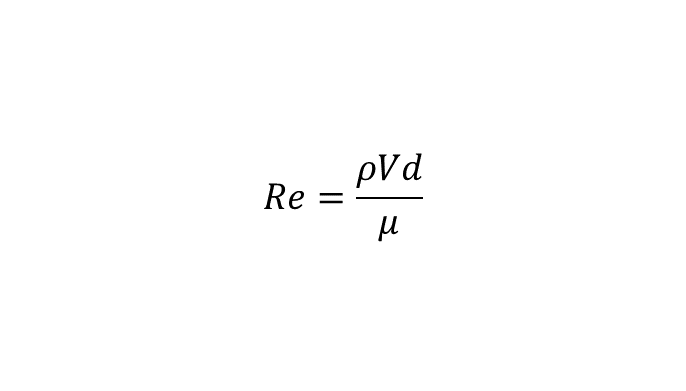
- ความสัมพันธ์ระหว่าง Reynolds Number และ compression
งานวิจัย Maximizing Performance from Loudspeaker Ports ได้ยกตัวอย่างกราฟความสัมพันธ์ระหว่าง Reynolds Number และ compression
จะเห็นว่า compression นั้นเริ่มขึ้นประมาณ Re ~ 2000 หรือจุดที่เริ่มเกิดการไหลแบบปั่นป่วน เป็นการยืนยันว่าการไหลแบบปั่นป่วนนี่แหละเป็นตะวการที่ทำให้เกิด compression
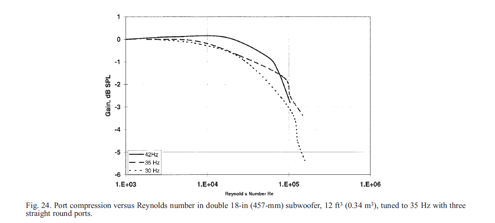
- Moody Diagram สำหรับคนที่อย่ารู้ข้อมูลให้ลึกขึ้น ก็อาจจะไปศึกษา Moody Diagram เพิ่มเติม ซึ่งกราฟนี้ก็จะสามารถช่วยเราเอา Re ที่เราคำนวนไว้ ไปคำนวณการสูญเสียความดันจากการไหลแบบปั่นป่วน (ΔP) หรือ การสูญเสียเฮด (head loss) ได้
จากงาน Maximizing Performance from Loudspeaker Ports ได้อ้างว่า เสียงจากพอร์ตจะเริ่มแย่ลงอย่างชัดเจนเมื่อ Re สูงกว่า 50,000
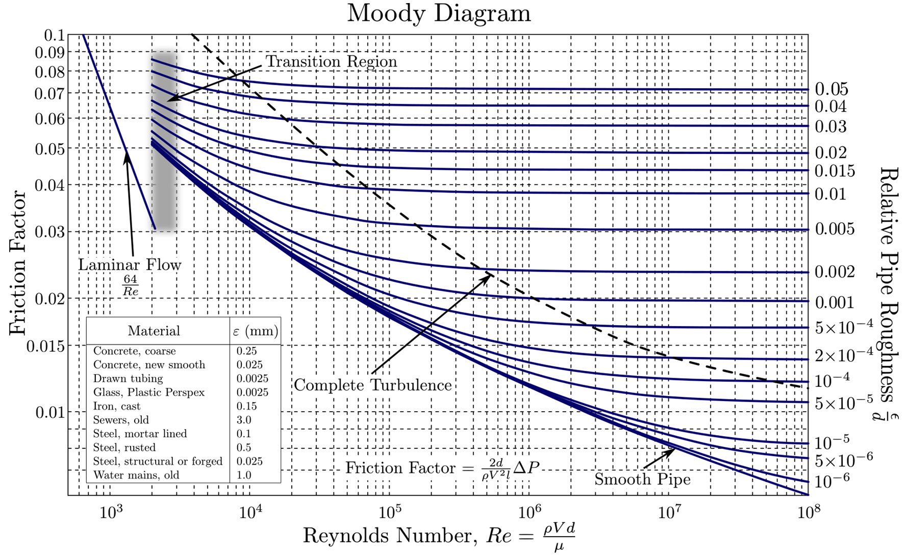
- งานวิจัยเพิ่มเติม
กราฟในรูปนี้เป็นอีกตัวอย่างที่ได้จากการวัดความดังเทียบกับความเร็วลมของพอร์ตที่ระดับพังงานต่าง ๆ
กราฟด้านซ้ายเป็นการเทียบความดัง โดยค่อย ๆ เร่งความดังเพิ่มที่ละ 6 db (เพิ่มความความต่างศักดิ์ไฟฟ้าขึ้น 2 เท่า) แล้วเพื่อความง่ายในการเปรียบเทียบก็จะลดกราฟลงมา -6db ทุก ๆ ครั้งที่เพิ่มความดังด้วย ก็คือในทางอุดมคติควรจะเห็นกราฟซ้อนทับกันเป็นเส้นเดียว
จากกราฟจะเห็นว่าที่ 40V มี port compression จนอยู่ต่ำกว่าที่ 1.25V มาก
ส่วนด้านขวาเป็นความเร็วของลมที่ปากพอร์ต ณ ต่ำแหน่งต่าง ๆ จากจุดศูนย์กลาง เนื่องจากพอร์ตนี้เป็นท่อทรงกระบอกธรรม จึงเห็นความเร็วลมสม่ำเสมอกันทั้งปากบริเวณพอร์ต และจะเข็นว่าที่ขอบมีความเร็วมากขึ้นเล็กน้อยด้วย
หมายเหตุ ข้อมูลของกราฟทั้งคู่นี้มาจากคนละงานวิจัย แต่อ้างอิงว่าใช้พอร์ตลักษณะและวิธีทดลองเดียวกัน แต่ดอกลำโพงและกล่องอาจจะไม่ใช่อันเดียวกัน
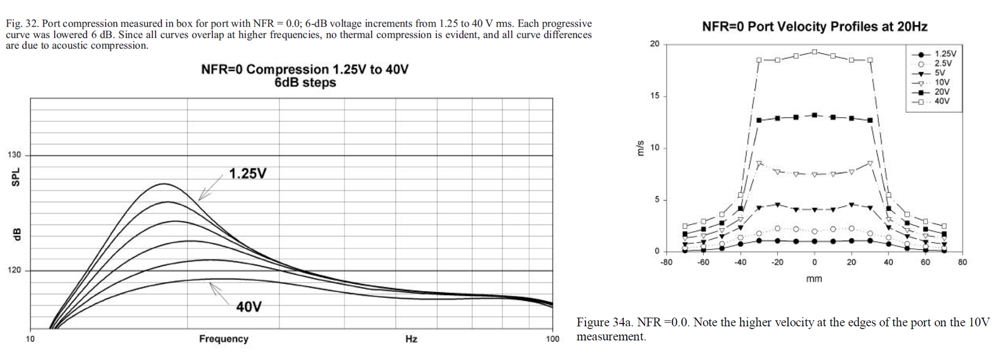
- หน้าตาของ turbulance
จากรูป กระแสปั่นป่วน หรือ turbulance จะเริ่มก่อตัวขึ้นที่ขอบของพอร์ตและพอกขึ้นมาหนาขึ้น ๆ มองในอีกมุมนึงคือกระแสลมตรงกลางถูกบีบลงให้แคบลงเรื่อย ๆ ซึ่งคำว่า compression อาจจะมาจากสาเหตุนี้เองก็ได้
จากลักษณะของ turbulance หลายคนก็อาจจะคิดว่าถ้าค่อย ๆ ถ่างพอร์ตให้ใหญ่ขึ้นเรื่อย ๆ หละจะได้ผลดีขึ้นไหม ซึ่งถูกต้องครับและนั้นก็คือการทำ flare นั้นเอง ซึ่งเดี๋ยวผมจะมาเล่าหลักการของมันในตอนต่อไป
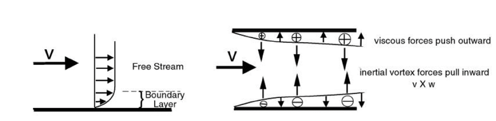
Port EP 2.5
เนื่องจากผมคิดว่า 2 ตอนที่ผ่านมาเนื้อหามันน่าจะยากไปนิด
เดี๋ยวผมขอแก้ตัวอธิบายให้ง่ายขึ้นอีกหน่อย
แต่ก่อนจะเข้าเรื่องมีข้อความหนึ่งที่ผมอยากใ้ห้ทุกคนลองคิดดู
”ถ้าคุณต้องการให้เกิดเสียง คุณต้องเคลื่อนอากาศ”
ถ้าคุณ เคลื่อนที่/ย้าย/ดัน/สั่น/ฯลฯ อากาศน้อย เสียงที่เกิดขึ้นก็จะเบา ถ้าต้องการเสียงดังมาก ๆ คุณก็ต้องเคลื่อนอากาศมาก ๆ
อ่านบทความอื่น ๆ ย้อนหลัง https://docs.google.com/spreadsheets/d/1rxUrbgZ-fHgAC0ry7jyNlXNsLzxi6G1SH0ofxL6onEk
- หลักทำงานของพอร์ตอย่างง่าย
ถ้ายังจำวิชาวิทยาศาสตร์ที่เรียนตอนเด็ก ๆ ได้ ก็อาจจะคุ้น ๆ รูปสปริงที่มีมวลติดอยู่กันได้บ้าง ผมจะบอกว่า จริง ๆ หลักการทำงานของพแร์ตนั้นก็ไม่ต่างกัน โดยมองว่าอากาศในพอร์ตคือมวลที่ปลายสปริงและตัวสปริงคืออากาศภายในตู้ลำโพง
เพื่อให้เข้าใจได้ง่ายขึ้น ผมจะเรียกอากาศในตู้ว่าอากาศ และ เรียกอากาศในพอร์ตว่ามวล
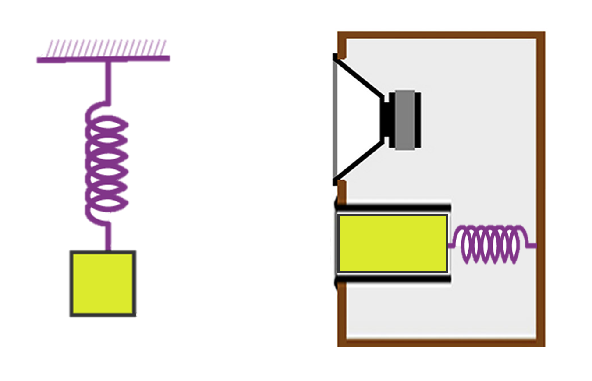
- เมื่อลำโพงทำงาน เวลาลำโพงผลักตัวเข้าอากาศในตู้ก็จะโดนอัดเข้าไปและไปดันมวลในพอร์ตออกมา เมื่อลำโพงกลับมาตำแหน่งตรงกลาง อากาศในลำโพงจะพยายามดึงมวลกลับเขามา และเมื่อลำโพงผลักออกมาด้านหน้า อากาศก็จะเข้ามาแทนที่บริเวณกรวยดอกลำโพง ทำให้มวลในพอร์ตโดนดึงเข้ามาด้วย พอลำโพงกลับเข้ามาที่ตำแหน่งกลางอีกครั้ง อากาศในตู้ก็จะพยายามดัยมวลในพอร์ตออกมาอีก ซึ่งจะเกิดวนซ้ำไปเรื่อย ๆ เป็นวงจรขณะที่ลำโพงทำงาน
มวลจะเคลื่อนมากหรือน้อยถ้าไม่คิดถึงกระแสปั่นป่วน จะขึ้นอยู่กับ ปริมาณอากาศที่ดอกลำโพงดันเข้ามาหรือดึงออกไปซึ่งก็สัมพันธ์กับความดังของลำโพง และ ความถี่สั่นพ้องของพอร์ตและตู้ ซึ่งก็มีพูดถึงไปใน EP 1
และอีกครั้งหนึ่ง “ถ้าคุณต้องการให้เกิดเสียง คุณต้องเคลื่อนอากาศ” ถ้ามวลจะเคลื่อนมากเสียงพอร์ตก็จะดัง มวลจะเคลื่อนน้อยเสียงพอร์ตก็จะเบา
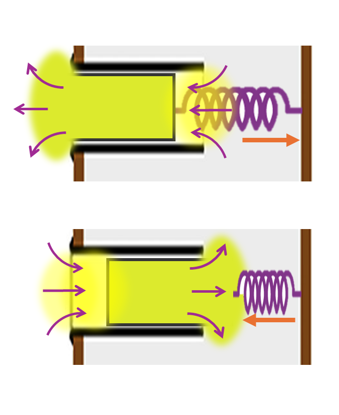
- ปัจจัยที่ทำให้พอร์ตแย่ลง
ถ้าเราเอากระแสปั่นป่วนเข้ามาคิดด้วย เราก็จะเห็นว่าเวลาพอร์ตทำงาน จะแสลมเข้าออกจะโดนแรงเสียดทานจากผิวของพอร์ตเองทำให้เกิดกระแสปั่นป่วนขึ้น และเมื่อเกิดกระแสปั่นป่วนมันก็จะไปลดปริมาณของมวลอากาศที่ขยับเข้าออกในพอร์ต
และเมื่อการเคลื่อนอากาศน้อยลง เสียงก็จะเบาลง
ปริมาณกระแสปั่นป่วนจะเพิ่มขึ้นตามความเร็วของลม อย่างที่พูดถึงใน EP 2
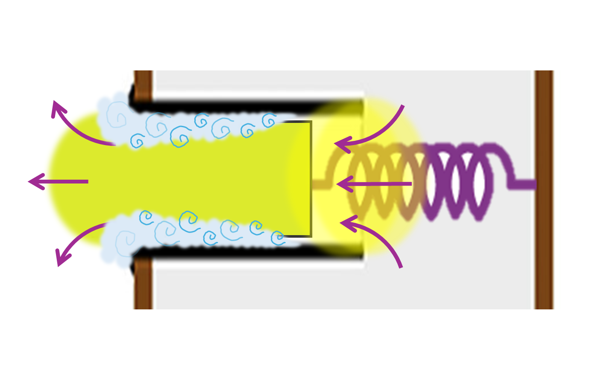
Port EP 3
ตอนนี้น่าจะเป็นตอนที่หลาย ๆ คนอยากรู้ จะออกแบบพอร์ตอย่างไรถึงดีที่สุด
อย่างไรก็ตามงานวิจัยในตอนนี้ยังหาวิธีออกแบบพอร์ตที่ดีที่สุดยังไม่ได้ แต่ก็มีหลายวิธีในการออกแบบพอร์ตให้ดีมีคุณภาพ ตอนนี้จะมาเล่าวิธีหนึ่งในหลาย ๆ วิธี ซึ่งจะเป็นวิธีพิ้นฐานที่สุด ทำง่าย และมีสูตรคำนวณ
อ่านบทความอื่น ๆ ย้อนหลัง https://docs.google.com/spreadsheets/d/1rxUrbgZ-fHgAC0ry7jyNlXNsLzxi6G1SH0ofxL6onEk
- หนึ่งพอร์ต สองเทคนิค
ในวิธีการออกแบบที่ผมจะมาเล่านี้ จะประกอบด้วย 2 เทคนิค
- ใส่ มุมตัด หรือ ส่วนโค้ง ที่ปากพอร์ต ซึ่งทำได้ง่ายเพียงแค่หาหัว router มาตัดส่วนปากของพอร์ตไปก็ใช้ได้แล้ว สามารถประยุคใช้ได้ทั้งพอร์ตตรงและแฟลร์
- Normalized Flare Rate อัตราแฟลร์ปรกติ คือ การออกแบบพอร์ตมีด้านเป็นส่วนโค้งอย่างสม่ำเสมอจากปากพอร์ตด้านหนึ่งไปอีกด้านหนึ่ง
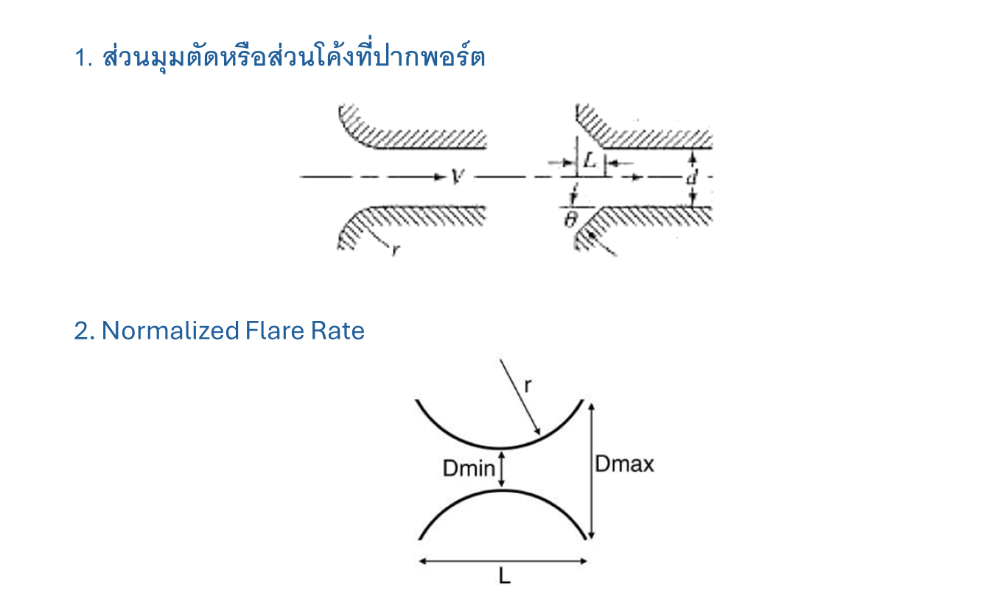
- กระแสปั่นป่วนที่ปากพอร์ต
ภาพนี้มาจาก Analysis and Modeling of the Bi-Directional Fluid Flow in Loudspeaker Ports ของ Zachary Rapoport และ Allan Devantier นักวิจัยจาก Harman
แสดงลักษณะการเกิดกระแสปั่นป่วนที่ ปากพอร์ตที่เอียงเป็นองศาต่าง ๆ จากแย่ที่สุดคือไม่เอียงเลยซึ่งเกิดกระแสปั่นป่วนเยอะมาก แต่จะดีขึ้นอย่างมากเมื่อเอียงขึ้นมา 10° และดีขึ้นอีกเมื่อเพิ่มความเอียงขึ้นไปถึง 30°
ผมได้อธิบายถึงผลของกระแสปั่นป่วนไว้ใน EP ที่ 2 และ อธิบายแบบย่อย ๆ ไว้ใน EP 2.5 ถ้าใครมาใหม่ก็สามารถย้อนกลับไปอ่านได้ครับ https://docs.google.com/spreadsheets/d/1rxUrbgZ-fHgAC0ry7jyNlXNsLzxi6G1SH0ofxL6onEk
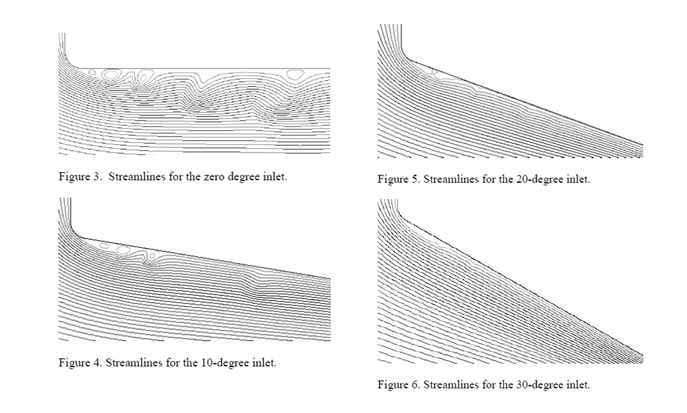
- จะเกิดอะไรขึ้นถ้าพอร์ตเอียงมากเกินไป
ที่เจอเมื่อถ้าปากพอร์ตเอียงมากเกินไปก็คือ จะมีกระแสลมตีกลับ ที่เรียกว่า flow separation หรือ การแยกชั้นของไหล ทำให้พอร์ตทำงานได้แย่ลง
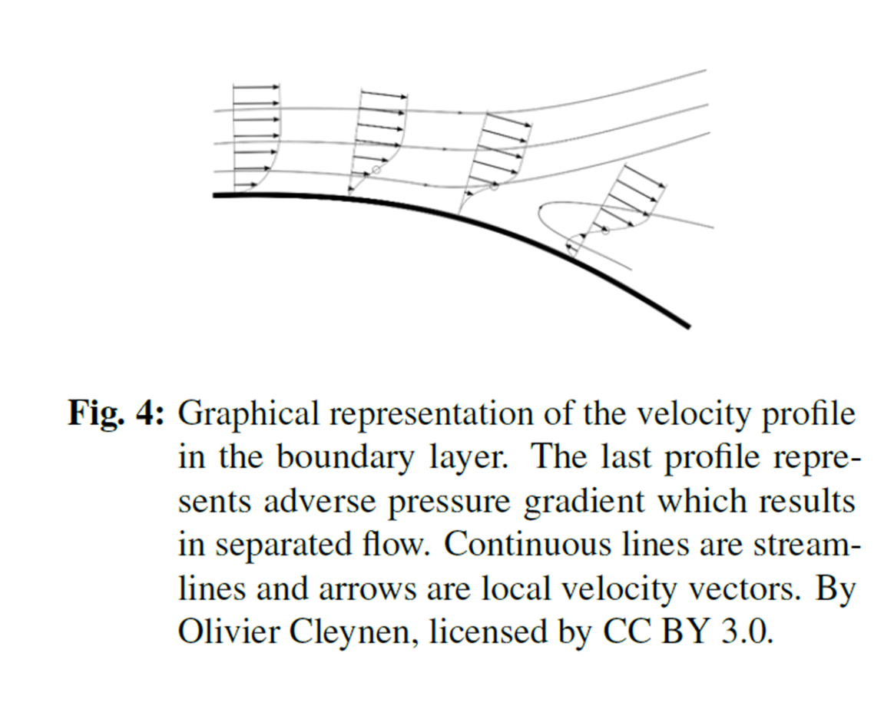
- ปากพอร์ตเอียงเท่าไหร่ดี
จากทฤษฎีของไหล กล่าวว่าค่าสัมประสิทธิ์การสูญเสีย K จะสัมพันธ์กับรัศมีของขอบโค้ง หรือ ความเอียงและความลึกของปากพอร์ต ซึ่งค่า K ยิ่งน้อยยิ่งดี
ในรูปอาจจะต้องดูดี ๆ เล็กน้อยเพราะมีกราฟสองแบบปนกันอยู่
กราฟเส้นล่างสุดที่เป็น r/d คือปากแบบขอบโค้ง โดย r คือรัศมี และ d คือความกว้างของพอร์ต
ส่วนกราฟอีก 3 เส้น ที่เป็น L/d ค่า L คือ ความลึกของปากพอร์ต และเลของศาด้านข้างคือ ความชันของพอร์ต θ ตามพอร์ตรูปขวา
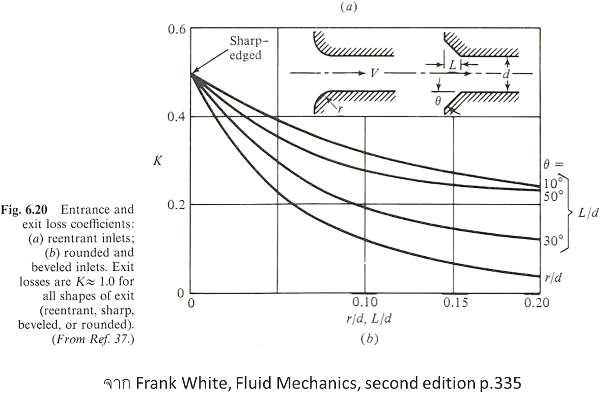
- สรุปการออกแบบปากพอร์ต
จากรูปที่แล้วจะเห็นว่าปากพอร์ตแบบโค้งจะให้ผลที่ดีมาก และดีที่สุดอยู่ที่ r/d = 0.2 หรือรัศมีของปากพอร์ตเป็น 20% หรือ 1 ใน 5 ของความกว้างของพอร์ต รองลงมาคือ มุมเอียง 30°
วิธีนี้สามารถนำไปใช้ได้ทั้งพอร์ตแฟลร์และพอร์ตตรง โดยเฉพาะพอร์ตตรงสามารถทำได้ง่ายโดยใช้ดอกเร้าเตอร์ตามภาพ
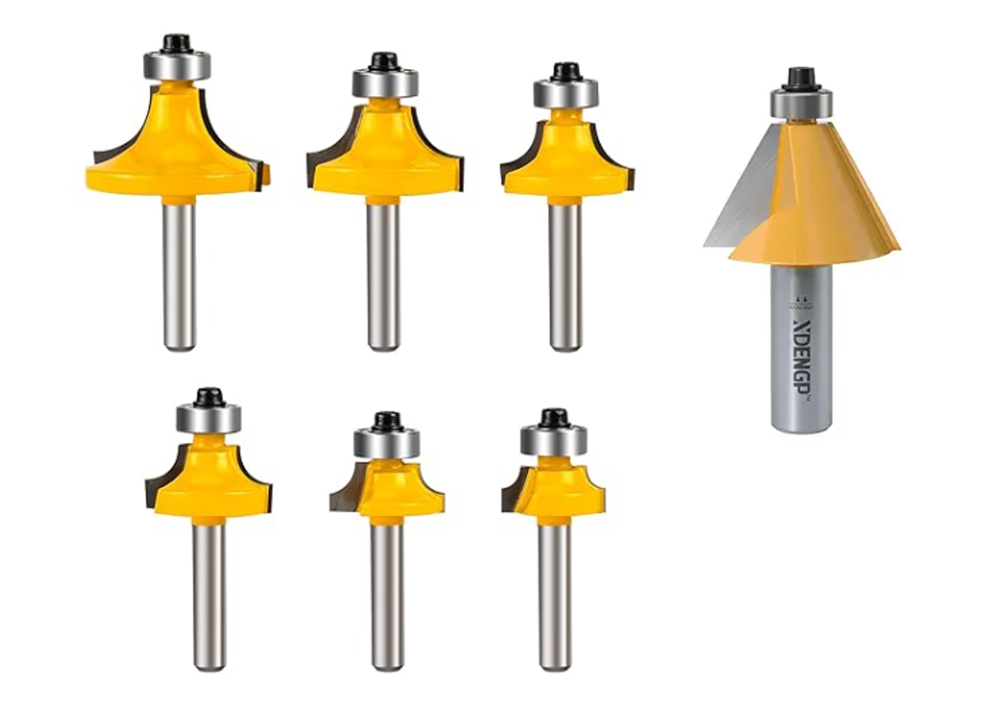
- Normalized Flare Rate หรือ อัตราแฟลร์ปรกติ
Normalized Flare Rate (NFR) นิยามโดย NFR = L/(2r) โดย L คือความยาวพอร์ต และ r คือรัศมีส่วนโค้งด้านข้างของพอร์ต
ตามนิยามพอร์ตตรงจะมีค่า NFR = 0 เพราะรัศมีส่วนโค้งมีค่าเป็นอนันต์ และ NFR จะมีค่าสูงสุดที่ NFR = 1 นั่นคือ r = L/2 หรือพอร์ตโค้งเป็นครึ่งวงกลมพอดีนั่นเอง
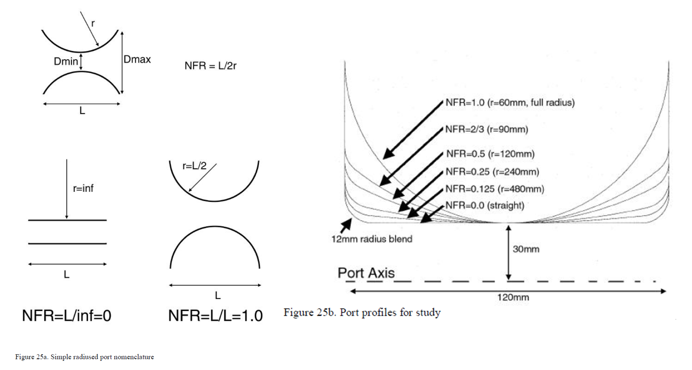
- สูตรคำนวนความยาวของพอร์ตแฟรล์ NFR
เนื่องจากการแฟรล์พอร์ตทำให้ขนาดภายในของพอร์ตเปลี่ยนแปลงไปมาก ทำให้ใช้สูตรแบบเดิมอย่างใน EP 1 ไม่ได้แล้ว แต่โชคดีที่เมื่อใช้ NFR สูตรการคำนวนนั้นง่ายขึ้น และค่า end correction ที่เป็นปัญหาเดิมนั้นสามารถหาได้ง่ายด้วย
จากรูป
c คือ ความเร็วของเสียงในอากาศ 343 m/s Lact คือ ความยาวพอร์ตจริง (m) r คือ รัศมีส่วนโค้ง (m) Dmin คือเส้นผ่านศูนย์กลางส่วนที่แคบสุดของพอร์ต (จะเห็นว่าใช้เป็นค่า end correction ด้วย) (m) Amin คือพื้นที่หน้าตัดส่วนที่แคบสุดของพอร์ต = π × (Dmin/2)^2 (m^2) Vb คือปริมาตรของตู้ (m^3)
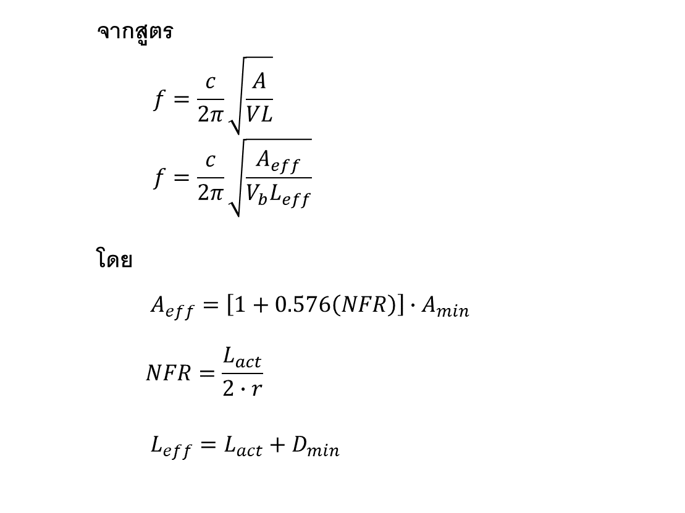
- การบีบอัดของพอร์ต NFR แบบต่าง ๆ กราฟนี้แสดงการตอบสนองความถี่ ณ ความความดังต่าง ๆ ของพอร์ต NFR แต่ละค่า
ที่เห็นกราฟความดังแต่ละเส้นทับกัน เพราะ เวลากราฟเร่งความดังเพิ่มที่ละ 6 db (เพิ่มความความต่างศักดิ์ไฟฟ้าขึ้น 2 เท่า) จะลดกราฟลง -6db ทุก ๆ ครั้ง เพื่อให้เปรียบเทียบได้ง่าย
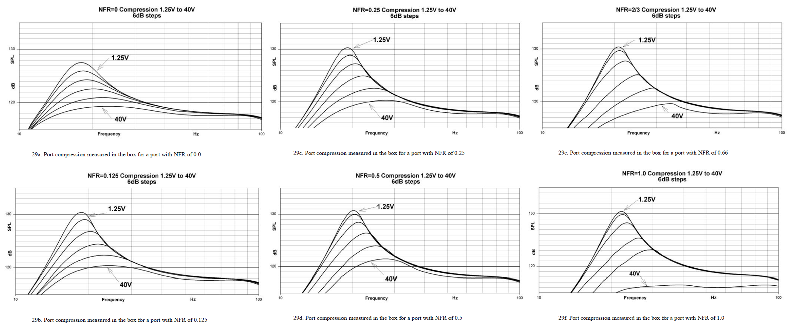
- การบีบอัดของพอร์ต NFR แบบต่าง ๆ ต่อ
เป็นการพล็อตอัตราการบีบอัดและความดัง
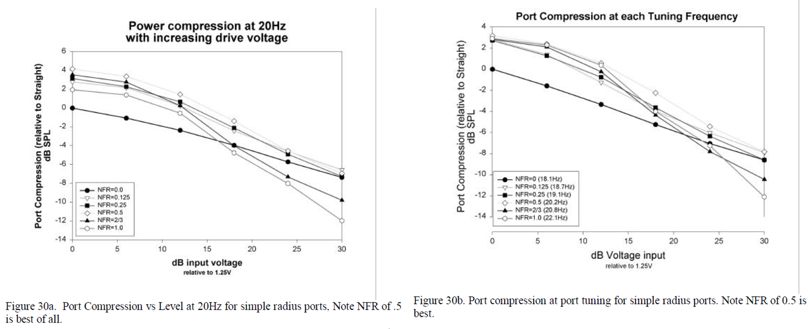
- NFR อันไหนดีที่สุด ดูความเพี้ยนในพอร์ต NFR
กราฟซ้ายแสดงความเพี้ยนฮาร์มอนิกรวม หรือ THD
กราฟขวาแสดงความเพี้ยนฮาร์มอนิกลำดับคี่ ซึ่งเป็นเสียงที่ไม่ค่อยน่าฟัง
ในกราฟจะมีผลของพอร์ตแฟรล์แบบอื่น ๆ อยู่ด้วยแต่ผมของไม่พูดถึงละกันครับ ใครสนใจก็สามารถอ่านใน Maximizing Performance from Loudspeaker Ports ได้
ถ้าสังเกตกราฟแต่ละตัวจะเห็นว่า
พอร์ต NFR = 0 หรือพอร์ตตรงจะใช้ได้ดีเมื่อความดังสูง พอร์ต NFR = 1 ดีเมื่อเล่นความดังต่ำ ๆ
และจะเห็นว่า NFR = 0.5 จะทำงานได้ดีทั้งดังน้อยและดังมาก ถึงจะไม่ได้ดีที่สุด
ดังนั้นสรุปได้ว่า ถ้าลำโพงใช้งานเสียงดัง ๆ ให้ใช้พอร์ตตรง (อย่าลืมใส่ส่วนโค้งที่ปากพอร์ต) ถ้าใช้งานเบา ๆ และต้องการเสียงที่ดีที่สุด ให้ใช้ NFR สูงที่สุดเท่าที่ทำได้ งานทั่ว ๆ ไป เปิดดังบ้าง เบาบ้าง ใช้ NFR = 0.5
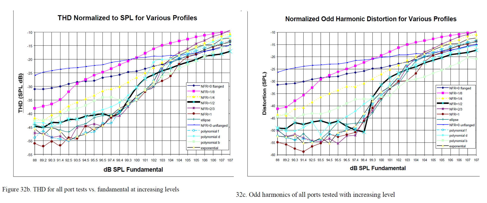
- วิธีออกแบบ NFR
ถ้าใครใช้โปรแกรม CAD ในการออกแบบลำโพงสามารถวาดพอร์ตได้ตามนี้
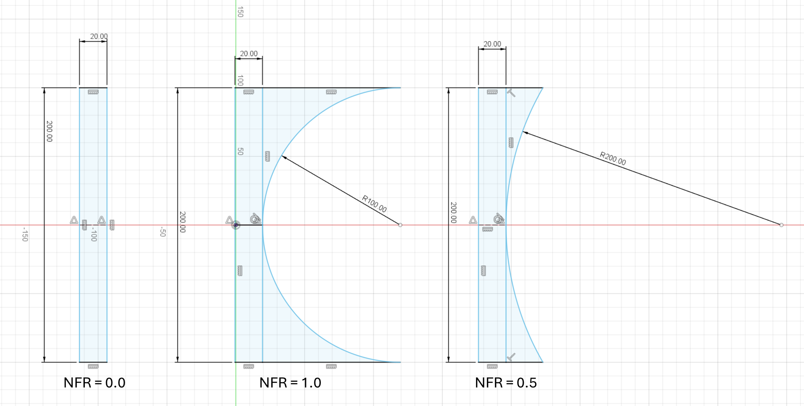
- อื่น ๆ
ข้อควรระวังอย่างหนึ่งคือพอร์ตลักษณะในรูปใช้สูตรคำนวนแบบ NFR ไม่ได้ เพราะ ด้านแคบยังคงมีลักษณะเป็นท่อตรงมากกว่า
ตอนหน้ายังมีเรื่องอื่น ๆ ที่น่าสนใจเกี่ยวกับพอร์ตอีก อย่าลืมติดตามกันครับ
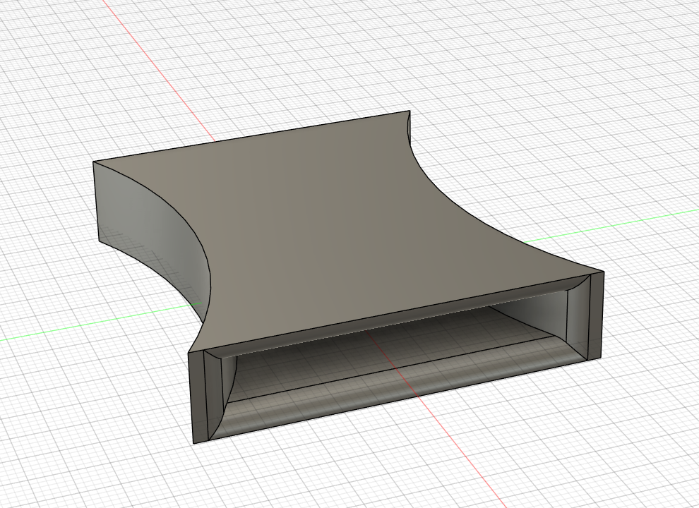
EP 4 ETC
ตอนแรกว่าจะหาเรื่อง Polynomial Flare Port แต่หาข้อมูลไม่ได้เลย ก็คงต้องขอข้ามไป = =“
แต่ไม่เป็นยังมีเรื่องอื่น ๆ ที่น่าสนใจ และสามารถเอาไปใช้ในการออกแบบได้จริง
เนื้อเรื่องตอนนี้
- การกระจายความเร็วบริเวณปากพอร์ต
- พอร์ตโค้งเท่าไหร่ดี ?
- พอร์ตหยาบ และ ตุ่ม หรือ หลุม ที่ปากพอร์ต
- พอร์ตกับการระบายความร้อน
- ช่องระหว่างพอร์ตและหน้าลำโพง
อ่านบทความอื่น ๆ ย้อนหลัง https://docs.google.com/spreadsheets/d/1rxUrbgZ-fHgAC0ry7jyNlXNsLzxi6G1SH0ofxL6onEk
- การกระจายความเร็วบริเวณปากพอร์ต รูปนี้แสดงเส้นโค้งความเร็ว (Velocity contour) ของอากาศ ในรูปจะเห็นเส้นโค้งหลาย ๆ เส้น เส้น ๆ หนึ่งคือบริเวณที่เกิดความเร็วลมเท่ากัน และสีแดงคือความเร็วที่ขอบปากพอร์ต
รูปนี้มาจากรายงานของ COMSOL เขียนโดย Bezzola สามารถดาวโหลดได้ที่ https://www.comsol.com/paper/download/679311/bezzola_paper.pdf
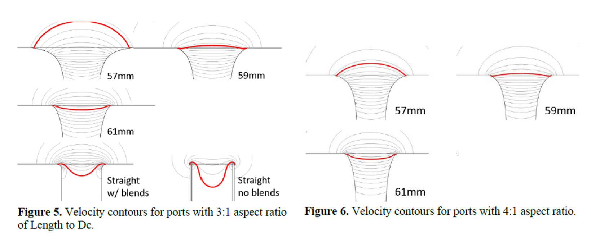
- ผู้เขียนใช้ขนาดพอร์ตดังนี้ อีกอย่างหนึ่งคือ (ถ้าจำไม่ผิด) ผู้เขียนระบุว่าพอร์ตนั้นออกแบบโดยใช้สมการณ์พหุนาม (polynomial) ซึ่งก็อย่างที่กล่าวไว้ว่าผมก็หาไม่เจอเหมือนกันว่าสมการณ์เขาหน้าต่างอย่างไร แต่พอลองเอาขนาดตามตารางมาเขียนใน CAD และใช้วิธีแบบ NFR (ใครไม่รู้ NFR คืออะไรให้อ่านตอนที่แล้ว) เมื่อเอาค่ารัศมีมาคำนวนจะได้ว่า
NFR 57 mm ~ 0.9 NFR 59 mm ~ 0.5 NFR 61 mm ~ 0.25
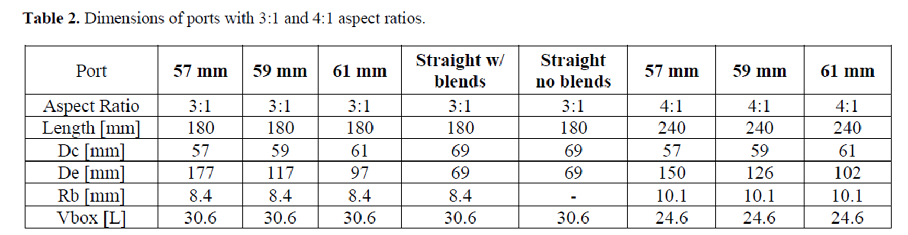
- ลอง simulate velocity contour
ใช้โปรแกรม FreeCAD และ CfdOF (extension สำหรับใช้ OpenFlow)
จากรูปลมจะเข้าพอร์ตจากด้านบนออกทางด้านล่าง ผลลัพธ์ที่ได้ค่อนข้างใกล้เคียงกับรายงานของ Bezzola
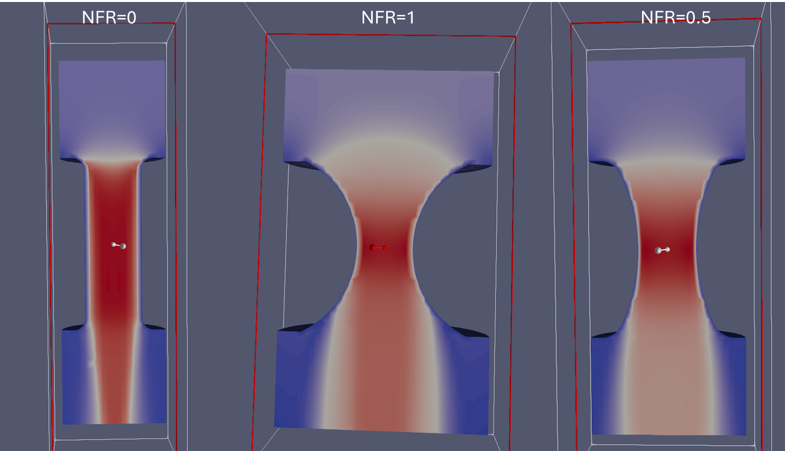
- การทดลองฟังเสียง
ด้านซ้ายเป็นการให้คะแนนความชอบในการฟัง จะเห็นว่าขนาด 59 มม. จะได้คะแนนดีอย่างสม่ำเสมอ
ด้านขวาเป็นการทดลอง Method of Adjustment (MoA) คือให้ผู้ร่วมทดลอง หมุนวอลลุ่มขึ้นเรื่อย ๆ จนกระทั้งได้ยินเสียงเพี้ยน จะเห็นขนาด 59 มม. ที่สามารถเพิ่มความดังได้มากที่สุดเช่นกัน
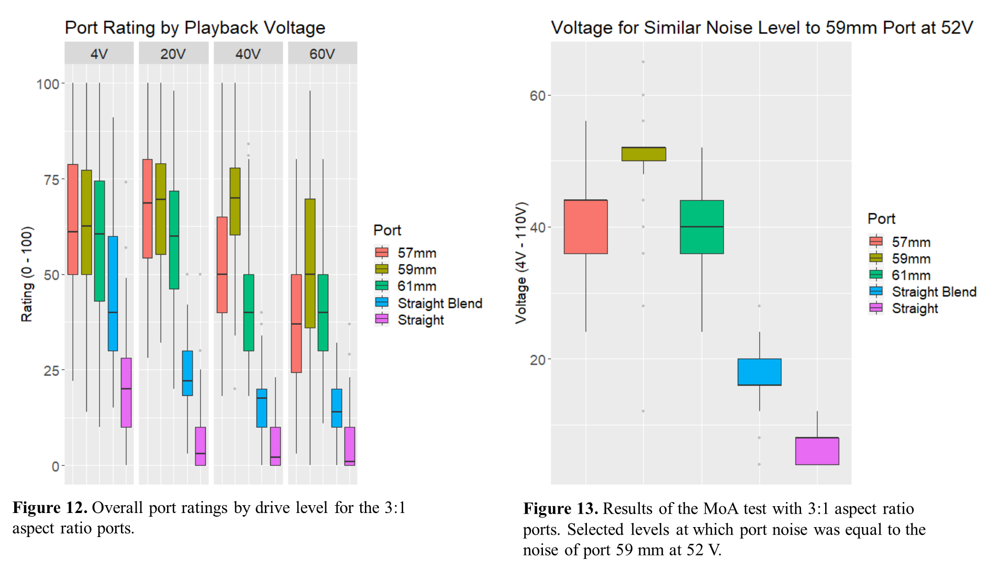
- พอร์ตโค้งเท่าไหร่ดี ?
อันนี้เป็นการทดลองของผมเอง โดยใช้ FreeCAD และ CfdOF มา simulate ความเร็วของลมในพอร์ต
พอร์ตที่ผมเอามาลองจะมีสองแบบคือ พอร์ตแบบตัว L และพอร์ตแบบตัว U ส่วนโค้งของพอร์ตจะกำหนดโดยรัศมีของผนังส่วนโค้งด้านใน (ด้านสั้น) (r) โดยคิดเป็นอัตราส่วนกับความกว้างของพอร์ต (d) ตามแนวส่วนโค้ง และความกว้างของส่วนโค้งจะสม่ำเสมอตลอดแนวส่วนโค้ง
ตัวอย่าง r = 8mm d = 20mm คิดเป็นอัตราส่วน 40%
ความเร็วที่ใช้อยู่ประมาณ 17 m/s
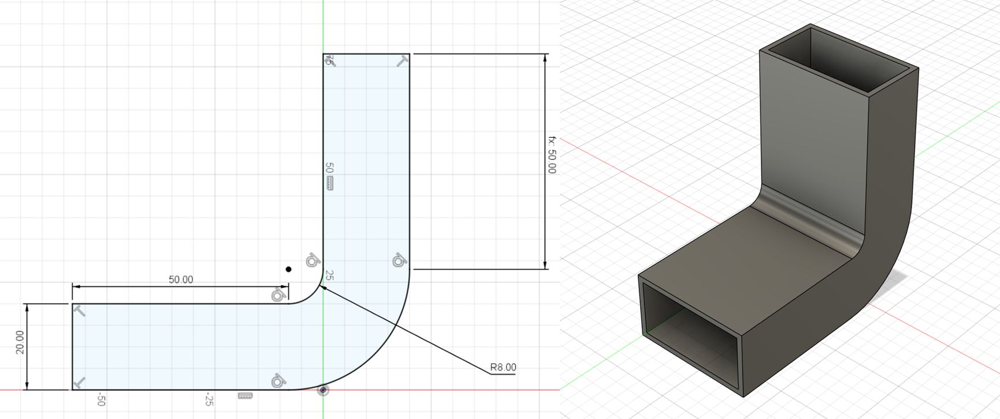
- ผลการทดลอง พอร์ต L St คือพอร์ตมุมฉากไม่มีส่วนโค้ง R=0% คือด้านในเป็นมุมฉากด้านนอกเป็นส่วนโค้ง
จากผลทดลอง ส่วนโค้งของพอร์ตควรมีรัศมีอย่างน้อย 40% หรือเลขกลม ๆ ก็ 50% หรือครึ่งหนึ่งของความกว้างพอร์ต
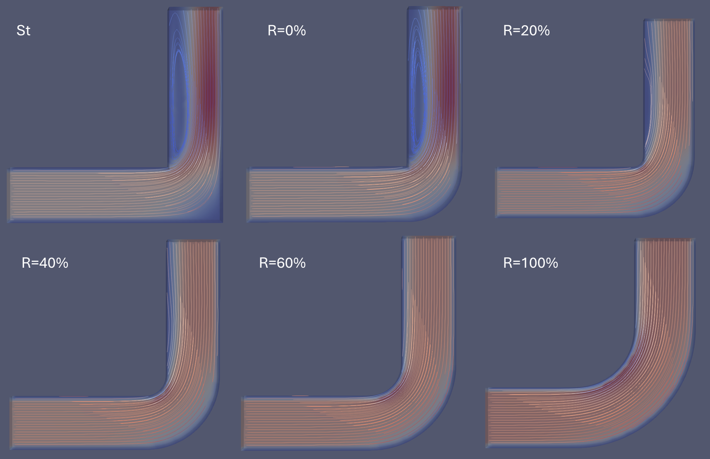
- ผลการทดลอง พอร์ต U
สำหรับพอร์ตตัว U จากผลทดลอง ส่วนโค้งของพอร์ตควรมีรัศมีอย่างน้อย 70%
ซึ่งอาจจะหมายความว่า ระยะห่างระหว่างพอร์ตทั้งสองข้างควรจะห่างจากกัน อย่างน้อย 1.4 เท่าของความกว้างพอร์ต หรือเลขกลม ๆ ก็ 1.5 เท่านั่นเอง
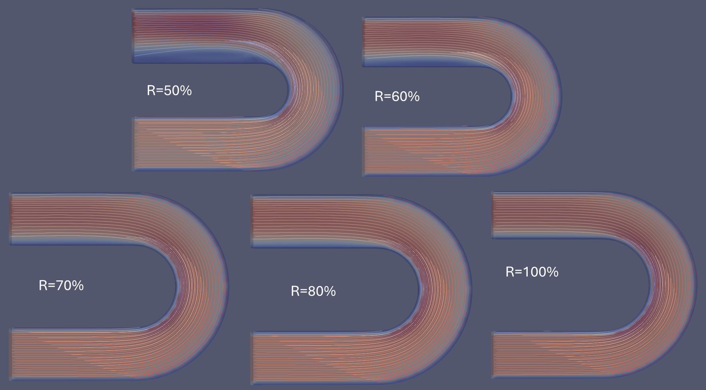
- พอร์ตหยาบ และ ตุ่ม หรือ หลุม ที่ปากพอร์ต
ไอเดียนี้มาจากผิวที่เป็นหลุมบนลูกกอล์ฟ ทุกคนคงเคยเห็นลูกกอล์ฟแล้วก็คงจะสงใสทำไมผิวของลูกกอล์ฟต้องเป็นหลุมแบบนั้น หลักการของหลุมบนผิวลูกกอล์ฟนั้นคือมันจะทำให้แรงต้านอากาศน้อยลง ถ้าดูจากรูปจะเห็นว่าอากาศนั้นสามารถห่อลูกกอล์ฟไปถึงด้านหลังได้มากขึ้น ซึ่งสุดท้ายก็จะทำให้ลูกกอล์ฟสามารถพุ่งไปไดไกลมากขึ้นด้วย
ในวงการเครื่องเสียงก็ได้มีการเอาเรื่องนี้มาใช้เช่นกัน ซึ่งอาจจะเคยเห็นพอร์ตแบบนี้ในเครื่องเสียงหลาย ๆ ตัว ซึ่งผลของมันดีไม่ดีอย่างไรไปดูการทดลองกัน
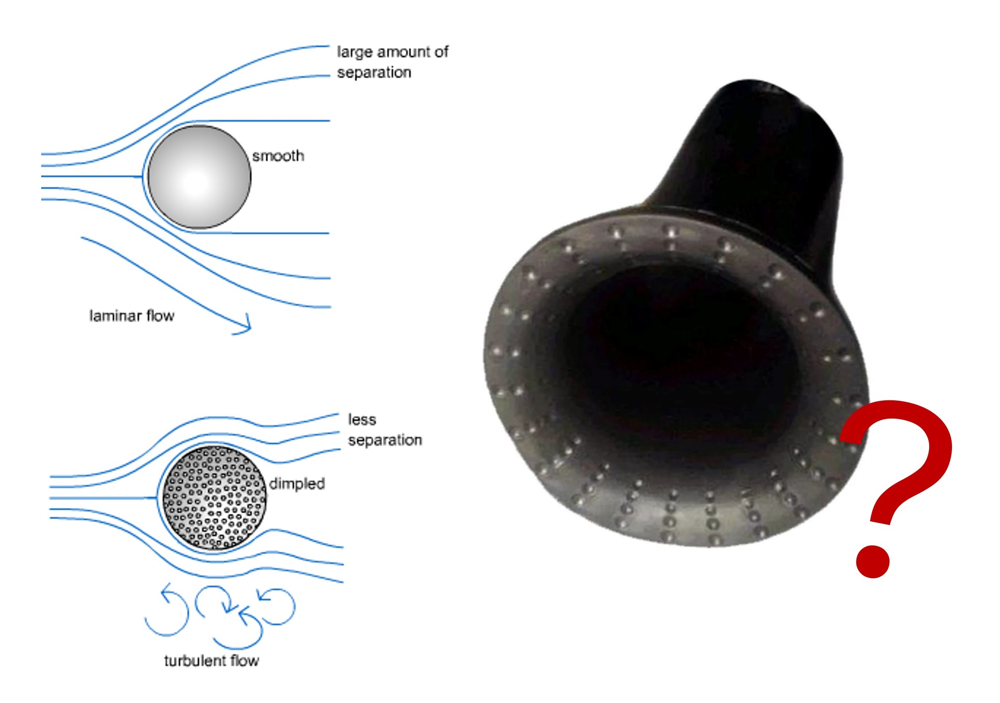 9. การทดลอง และ ผลการทดลอง ในการทดลองใช้พอร์ต NFR = 0.5 แล้วติดลูกแก้วครึ่งวงกลมที่มีขนาดสม่ำเสมอลงไปที่ผิว โดยลูกแก้วครึ่งวงกลมนี้มีขนาด 1mm, 1.25mm, 1.75mm และ 2.25mm ผลการทดลองเป็นไปตามตาราง THD ด้านขวา
สรุปได้ว่าพอร์ตหยาบไม่ได้มีผลดีกับเสียง
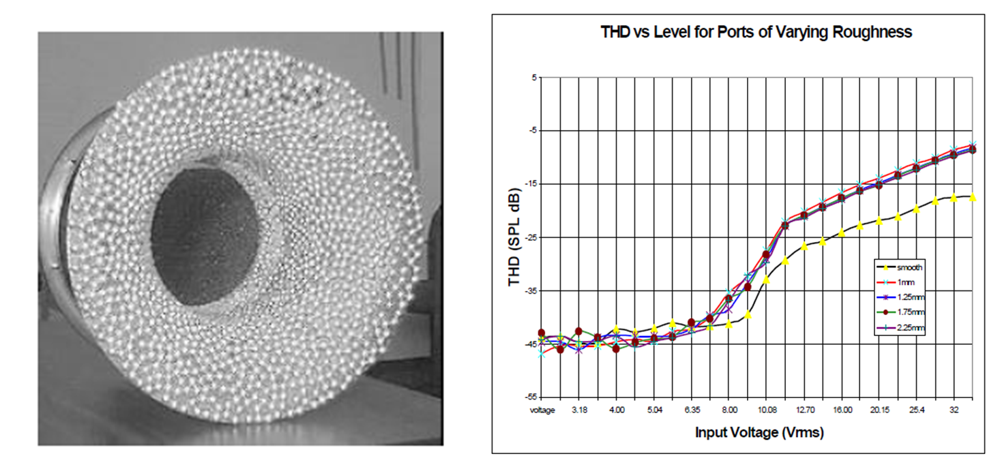
- พอร์ตกับการระบายความร้อน ประโยชน์หนึ่งของพอร์ตซึ่งอาจจะไม่ค่อยคิดถึงกันมากนักคือ พอร์ตนั้นทำให้สามารถช่วยระบายความร้อนออกจากตู้ลำโพงได้
การทดลองนี้จะทดลองวัดอุณหภูมิภายในลำโพง ในตู้ที่มีพอร์ตแบบต่าง ๆ ดังนี้
- ตู้ปิด
- ตู้ที่มีแฟล์พอร์ต 1 และ 2 ท่อ
- ตู้ที่มีรูเล็ก ๆ 1 รู และ 2 รู เนื่องจาก รูเล็ก ๆ จะเกิดกระแสปั่นป่วนอย่างมากซึ่งก็ทำให้ผลการทดลองชัดเจนมากขึ้น
- ตู้ 2 พอร์ตที่ออกแบบให้พอร์ตด้านหนึ่งมีการแลกเปลี่ยนอุณหภูมิเข้าอีกพอร์ตหนึ่งแลกเปลี่ยนอุณหภูมิออก ซึ่งหวังว่าจะเกิดการถายเทความร้อยเป็นวงจร
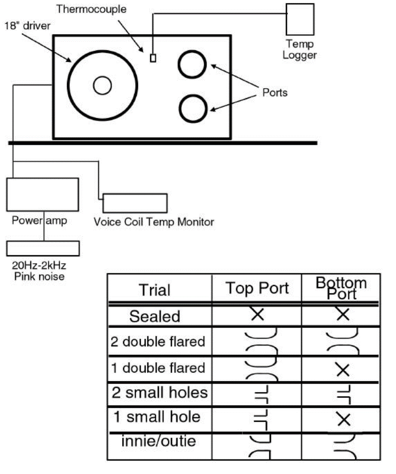
- ผลการทดลอง
จะเห็นว่าตู้ปิดจะมีอุณหภูมิที่สูงที่สุดคือเกือบ ๆ 60°C (ในกราฟเป็น °F)
กลุ่มที่ใช้พอร์ตแฟล์ ไม่ว่าจะมี 1 หรือ 2 พอร์ต จะมีอุณหภูมิสูงกว่า 40°C เล็กน้อย และการออกแบบวงจรถ่ายเทความร้อนไม่ได้มีประโยชน์อย่างมีนัยสำคัญ
กลุ่มที่มีกระแสปั่นป่วนมาก ๆ อย่างรูเล็ก ๆ สามารถระบายความร้อนได้ดีมาก แต่ในทางปฎิบัตคงไม่มีใครเจาะรูเล็ก ๆ กันเพราะจะทำให้เกิดเสียงไม่พึงประสงค์ตามมา
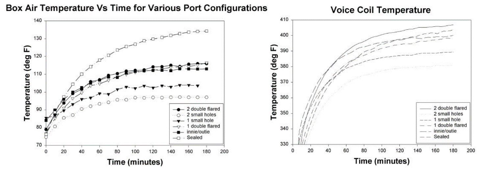
- ช่องระหว่างพอร์ตและหน้าปิดลำโพง
การออกแบบลำโพงบางครั้งก็มีการใช้แผ่นไม้หรือวัสดุหนา ๆ มาปิด เพื่อบังขอบดอกลำโพงและรูน็อตเพื่อให้เกิดความสวยงาม แต่ในบางครั้งถ้าปิดได้ไม่สนิดพอก็จะเกิดปัญหาขึ้น ซึ่งพอร์ตก็จะมีปัญหาเช่นกัน
จากภาพเป็นการจำลองพอร์ตที่มีความกว้างประมาณ 3 ซม. และมีแผ่นมาปิดด้านหน้า หนา 1 ซม. แต่มีช่องว่างอยู่ 3 มม. จะเห็นว่าความเร็วลมในพอร์ตไม่สม่ำเสมอกันซึ่งก็เกิดจากกระแสปั่นป่วน ในการใช้งานจริงพอร์ตก็อาจจะมีเสียงแปลก ๆ ออกมาตอนเปิดเสียงดัง ๆ
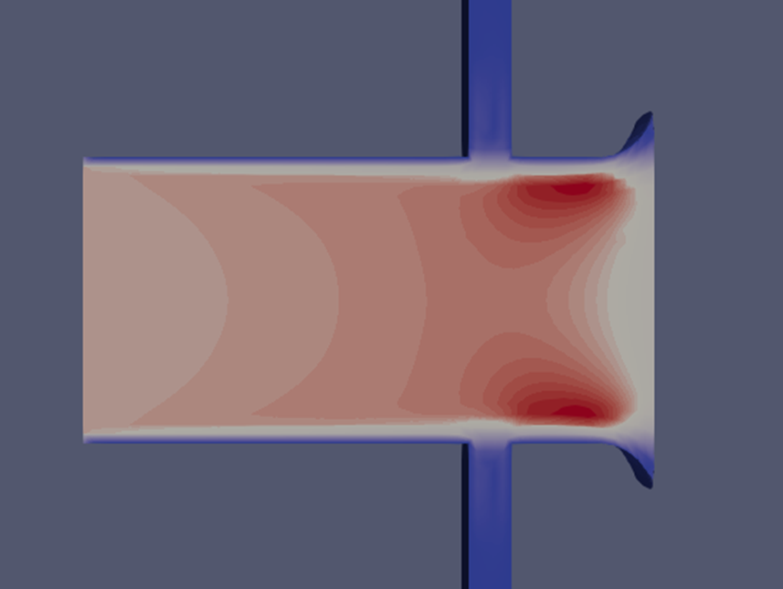
- สรุป
ตอนแรกคิดว่าจะจบในตอนนี้ แต่ไป ๆ มา ๆ คิดว่าส่วนสรุปน่าจะเยอะไปหน่อย ขอเก็บไปต่อในตอนต่อไปดีกว่าครับ

EP 5 Summary
สรุปทั้ง 4(.5) ตอนที่ผ่านมา
ก็จะเป็นแนวทางที่ผมคิดว่าสามารถเอาไปประยุคใช้กับการออกแบบจริง ๆ และผมก็คงเอาไปใช้กับงานต่อ ๆ ไปของผมเองด้วย
คนที่ต้องการศึกษาเพิ่มด้วยตัวเองผมแนะนำเริ่มต้นที่งานวิจัย Maximizing Performance from Loudspeaker Ports ของ Alex Salvatti, Doug Button และ Allan Devantier ซึ่งก็หาไม่ยาก search google ก็เจอ มีเว็ป PEARL HiFi ที่ให้ download ฟรี
ตอนนี้จะเป็นตอนสุดท้ายของเรื่องพอร์ตแล้ว ถ้าใครอยากรู้เรื่องไหนต่อก็บอกผมได้นะครับ ผมสามารถเข้าดูงานวิจัยจาก AES ได้ ก็จะมีข้อมูลหลาย ๆ อย่างที่ไม่มีในตำราภาษาไทยหรือมีเรื่องที่ไม่ค่อยพูดกันในไทย (ซึ่งเรื่องพอร์ตนี้ก็น่าจะเป็นหนึ่งในนั้น) ยังไงก็ไม่ต้องเกรงใจครับผมจะได้หาความรู้ไปในตัวด้วย
อ่านบทความอื่น ๆ ย้อนหลัง https://docs.google.com/spreadsheets/d/1rxUrbgZ-fHgAC0ry7jyNlXNsLzxi6G1SH0ofxL6onEk
- ปากพอร์ต
ให้ทำปากพอร์ตให้โค้ง รัศมีคิดเป็นอย่างน้อย 20% ของความกว้างพอร์ต หรือ ให้ทำปากพอร์ตเฉียง 30° และลึกเป็นอย่างน้อย 20% ของความกว้างพอร์ต
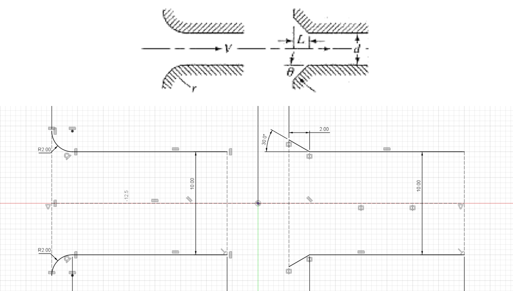
- ถ้าต้องการทำแฟล์พอร์ต NFR = 0.5 ดีที่สุด
แต่เมื่อออกแบบแฟล์พอร์ตแบบ NFR แล้ว จะใช้สูตรตามโปรแกรมออกแบบทั่วไปไม่ได้ จะต้องคำนวนเอง
จากสูตร f = ความถี่พอร์ต Amin = พื้นที่ส่วนที่แคบที่สุดของพอร์ต Lact = ความยาวของพอร์ตจริง ๆ Leff = ความยาวของพอร์ตรวมค่าชดเชย Dmin = ความกว้างพอร์ตส่วนที่แคบที่สุด
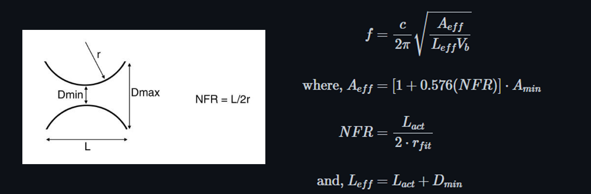
- พอร์ตงอ
ข้อตัว L ใช้รัศมีด้านในอย่างน้อย 50% ของความกว้างพอร์ต
ข้อตัว U ใช้รัศมีด้านในอย่างน้อย 75% หรือ เส้นผ่านศูนย์กลางอย่างน้อย 150% ของความกว้างพอร์ต
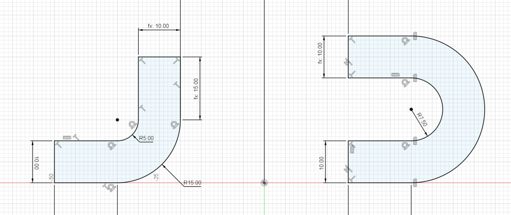
- พอร์ตผิวเรียบ ๆ แรงเสียดทานน้อย ๆ ดีที่สุด
ความขรุขระที่พอร์ตไม่มีผลดีต่อเสียง
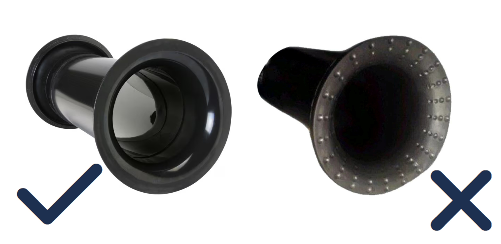
- พอร์ตสามารถช่วยระบายความร้อนได้
- พอร์ตที่มีกระแสปั่นป่วนสูง จะระบายความร้อนได้ดีกว่า
- การจงใจใช้ปากพอร์ตด้านใน และด้านนอกให้ไม่เหมือนกัน ให้ด้านในมีกระแสปั่นป่วนสูง อาจจะเป็นการออกแบบสายกลาง ๆ ที่เสียงดีและระบายความร้อนได้ แต่สูตรคำนวนก็จะเปลี่ยนไป
- ตู้ใน bandpass การหันด้าน voice coil ของดอกลำโพง ไว้ด้านเดียวกับพอร์ตสามารถระบายความร้อนได้ (ต้องทำตั้งแต่ออกแบบนะ ถ้าเขาออกแบบมาให้เอาด้านหลังหันเขาห้องปิดก็ต้องทำตามนั้นนะ ไม่อย่างนั้นเสียงไม่ออกผมไม่รู้ด้วยนะ : D )
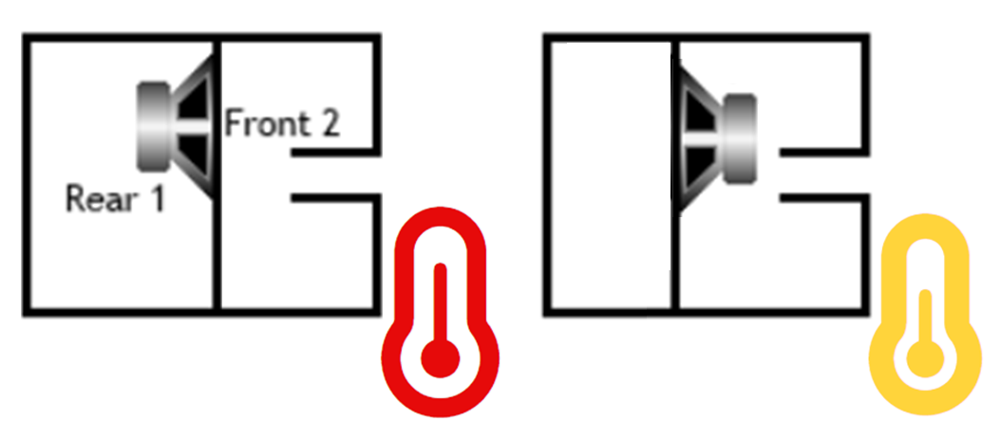
A well rounded entrance of a flare port has radius = 0.2 x diameter
End corrections are needed because the radiation impedance of a port is not zero
“Normalized Flare Rate” or NFR as the ratio of overall port length to flare radius:
Unexpectedly, port tuning frequency was only weakly dependent on flare. Clearly, the port length and minimum throat diameter appear to be the main determinates of tuning
= Speed of sound = actual port length = best fit flare radius = minimum throat area = minimum throat diameter = net box volume
ความขรุขระที่พนังพอร์ตไม่ค่อยมีผลกับ ความเสียดทาน ถ้าเป็น laminar flow แต่จะมีผลอย่างมากกับ turbulence
General
- No sharp edge! Radius the edges to 20% of diameters
- NFR ~ 1.0 for low level distortion at low power NFR ~ 0 for high level output round radius still be used NFR ~ 0.5 for moderate best compromise
- roughness on the wall have no benefit
- flare port ยิ่ง simple ยิ่งง่ายต่อการคำนวน End correction
- flare กว้าง ๆ ทำงานได้ดีที่สุด ในพลังงานต่ำ ๆ แต่จะมีปัญหากับระดับพลังงานสูง ๆ เพราะจะเกิด turbulence ภายในพอร์ตใกล้ ๆ ปาก
- พอร์ตที่ออกแบบมาดีมี turbulence ต่ำ ๆ จะมีความสามารถในการระบายความร้อนต่ำ
- มีหลายวิธีในการหา port profile เพื่อให้ได้ port ที่มีคุณภาพ